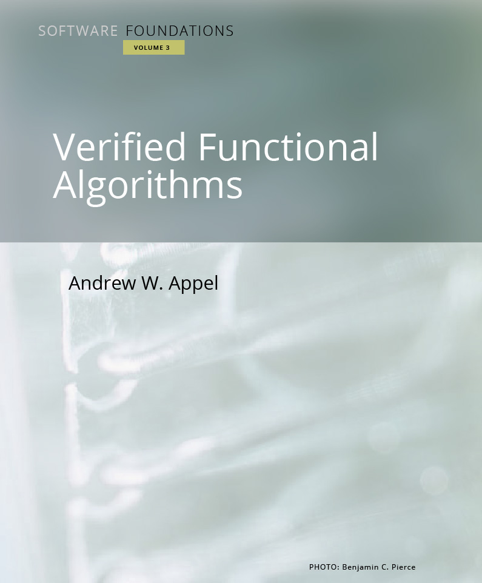

このページは Software Foundations の日本語翻訳版「ソフトウェアの基礎」です。
「ソフトウェアの基礎(Software Foundations)」シリーズでは、高信頼ソフトウェアに関する広範囲の数学的基礎を学びます。
このシリーズの特徴は、取り扱う内容がすべて形式化されて、さらに機械によって確かめられることです。 これは、それぞれのテキストがCoqのスクリプトファイルそのものとなっていることで実現されています。
読者は、学部生から博士課程の学生や研究者に至るまでの広範囲を想定しています。 論理学やプログラミング言語についての知識は仮定しませんが、ある程度の数学的素養は理解に有用です。 1学期分の講義として、論理の基礎に加えて、プログラミング言語の基礎または検証済み関数型アルゴリズム、あるいは両方の一部を扱うように設計されています。
| 第 1 巻 |
|
「論理の基礎」ではこのシリーズの基本となる概念について学びます。この中には関数型プログラミング、論理の基本概念、定理証明支援系、そしてCoqが含まれます。 |
| 第 2 巻 |
|
「プログラミング言語の基礎」では操作的意味論、ホーア論理、静的型システムなどのプログラミング言語理論について学びます。 |
| 第 3 巻 |
|
「検証済み関数型アルゴリズム」では種々のデータ構造が検証できることを見ます。  |
| 第 4 巻 |
|
「Coqにおけるプロパティベーステスト」ではCoqにおける形式仕様や照明に対するプロパティベースのランダムテストについて学びます。 |